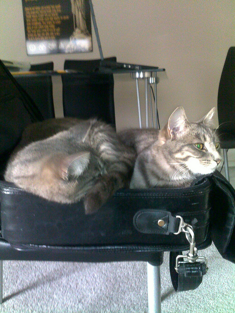

2026
ᠠᠭᠤᠯᠠ ᠲᠠᠢ
ᠠᠵᠢᠯᠯᠠᠬᠤ ᠥᠷᠲᠡᠭᠡ ᠶᠢᠨ ᠰᠡᠳᠦᠪ᠂ ᠥᠪᠡᠷᠲᠡᠭᠡᠨ ᠵᠠᠰᠠᠬᠤ ᠣᠷᠣᠨ ᠤ ᠮᠣᠩᠭᠣᠯ ᠡᠮᠨᠡᠯᠭᠡ᠂
ᠲᠠᠨ ᠤ ᠠᠵᠢᠯ ᠠᠮᠢᠳᠤᠷᠠᠯ ᠤᠨ ᠵᠣᠯ ᠵᠢᠷᠭᠠᠯ᠂ ᠠᠮᠤᠷ ᠠᠮᠤᠭᠤᠯᠠᠩ᠂ ᠠᠯᠢᠪᠠ ᠰᠠᠢᠨ ᠰᠠᠢᠬᠠᠨ ᠢ ᠵᠦᠩᠨᠡᠨ ᠢᠷᠦᠭᠡᠶᠡ
6. ᠮᠣᠩᠭᠣᠯ ᠬᠡᠯᠡᠨ ᠦ ᠬᠣᠯᠪᠣᠬᠤ ᠦᠭᠡ ᠵᠢᠨ ᠣᠨᠴᠠᠯᠢᠭ ᠰᠢᠨᠵᠢ᠂ ᠲᠥᠷᠥᠯ ᠵᠦᠢᠯ ᠢ ᠵᠢᠱᠢᠶᠡ ᠲᠠᠢ ᠶᠠᠷᠢ᠃
ᠤ ᠵᠠᠬᠠ ᠴᠣᠬᠣᠢᠵᠤ᠂ ᠲᠡᠭᠦᠨ ᠦ ᠳᠣᠲᠣᠷᠠ ᠨᠢᠮᠭᠡᠨ ᠴᠠᠭᠠᠨ ᠬᠥᠷᠥᠰᠥ ᠲᠠᠢ ᠭᠤᠸᠠ
ᠤᠨ ᠬᠥᠮᠥᠨ ᠦ ᠨᠢᠳᠦᠨ ᠳ᠋ᠤ ᠶᠠᠭᠠᠬᠢᠨ ᠲᠠᠨᠢᠭ᠌ᠳᠠᠨᠠ᠃ ᠬᠤᠷᠳᠤᠠᠯᠠ ᠳᠣᠪᠲᠣᠯᠬᠤ ᠠᠭᠤᠷ

ᠦᠶᠡ ᠶᠢᠨ ᠤᠷᠠᠨ
ᠤᠨ ᠮᠦᠸᠧ ᠭᠤᠤ ᠠᠭᠤᠢ ᠶᠢᠨ ᠲᠤᠬᠠᠢ ᠴᠢᠯᠦᠭᠡᠲᠡᠢ ᠪᠡᠷ ᠳᠠᠭᠠᠵᠤ ᠰᠡᠳᠬᠢᠭᠰᠡᠨ ᠵᠢᠭᠤᠯᠴᠢᠯᠠᠯ
ᠭᠣᠣᠯ ᠦᠵᠡᠯ ᠰᠠᠨᠠᠭᠠ： ᠰᠣᠶᠣᠯ /ᠬᠣᠲᠠ ᠶᠢᠨ ᠴᠢᠨᠠᠷ ᠰᠠᠢᠲᠠᠢ ᠬᠥᠭ᠍ᠵᠢᠯᠲᠡ/ ᠬᠡᠷᠡᠭ
ᠴᠡᠪᠡᠷ ᠠᠰᠠᠭᠤᠬᠤ ᠥᠭᠦᠯᠡᠪᠦᠷᠢ ᠨᠠᠢᠢᠷᠠᠭᠤᠯᠭᠠ ᠶᠢᠨ ᠠᠰᠠᠭᠤᠬᠤ ᠥᠭᠦᠯᠡᠪᠦᠷᠢ ᠵᠠᠬᠢᠷᠤᠨ ᠠᠰᠠᠭᠤᠬᠤ ᠥᠭᠦᠯᠡᠪᠦᠷᠢ
ᠦᠰᠦᠭ ᠶ᠋ᠢᠡᠷ ᠪᠢᠴᠢᠭᠰᠡᠨ ᠬᠡᠦᠬᠡᠨ ᠦ ᠬᠡᠶ᠋ᠢᠮᠦᠷᠢ ᠨᠢ ᠳᠠᠩᠳᠠ ᠪᠣᠰᠤᠭᠠ ᠪᠠᠶ᠋ᠢᠳᠠᠭ᠃
ᠦᠨᠳᠦᠷ ᠡᠪᠦᠭᠡᠳ 1 ᠵᠠᠬᠢᠶᠠ ᠮᠤᠨᠭᠭᠤᠯ ᠬᠡᠯᠡ ᠥᠨᠥᠳᠦᠷ 1 ᠪᠢᠳᠡᠨ 1 ᠰᠠᠬᠢᠶᠠ ᠤᠤᠭᠠᠯ ᠬᠡᠯᠡ
9. ᠮᠣᠩᠭᠣᠯ ᠬᠡᠯᠡᠨ ᠦ ᠬᠠᠨᠳᠤᠯᠭᠠ ᠦᠭᠡ ᠪᠠ ᠲᠠᠶᠢᠪᠤᠷᠢ ᠦᠭᠡ ᠨᠢ ᠶᠠᠮᠠᠷ ᠢᠯᠭᠠᠭᠠ ᠲᠠᠢ ᠪᠠᠶᠢᠳᠠᠭ ᠢ ᠵᠢᠱᠢᠶᠡ ᠲᠠᠢ ᠶᠠᠷᠢ᠃
ᠤᠨᠤᠭᠠ ᠬᠣᠶᠠᠷ ᠤᠨ ᠠᠯᠠᠭ ᠡᠷᠢᠶᠡᠨ ᠪᠠᠢᠭ᠌ᠰᠠᠨ ᠰᠡᠭᠦᠳᠡᠷ ᠦᠭᠡᠢ ᠴᠢᠯᠠᠭᠤ ᠭᠡᠵᠤ ᠪᠠᠢᠳᠠᠭ
① ②ᠦᠢᠯᠡ ᠦᠢᠯᠡ ᠦᠢᠯᠡ᠄ ③ᠲᠡᠮᠳᠡᠭ ᠦᠢᠯᠡ ᠦᠢᠯᠡ ᠄ ④ ᠦᠢᠯᠡ ᠦᠢᠯᠡ ⑤ᠦᠢᠯᠡ ᠲᠡᠮᠳᠡᠭ ᠦᠢᠯᠡ ᠨᠡᠷᠡ᠄
ᠵᠢᠷᠭᠤᠳᠤᠭᠠᠷ ᠬᠢᠴᠢᠶᠡᠯ ᠤᠳᠬᠠ ᠤᠷᠠᠯᠢᠭ ᠤᠨ ᠰᠡᠷᠭᠦᠯᠲᠡ ᠪᠠ ᠱᠠᠰᠢᠨ ᠤ ᠦᠭᠡᠷᠡᠴᠢᠯᠡᠯᠲᠡ
ᠲᠦᠮᠡᠨ ᠪᠦᠵᠢᠭ ᠢ ᠬᠡᠯᠡᠭᠡᠳ ᠪᠠᠷᠠᠬᠤ ᠦᠭᠡᠢ᠂ ᠰᠤᠯᠤᠩᠭᠠᠨ ᠪᠠᠩᠵᠠᠯᠲᠤ ᠪᠦᠵᠢᠭ ᠢᠨᠤ